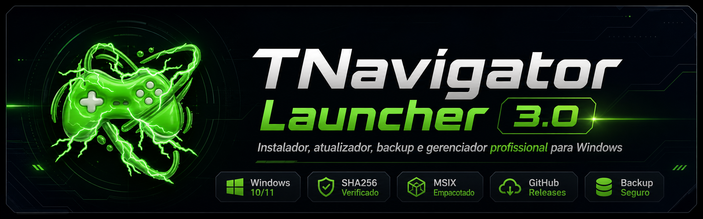

Baixar
Faça o download oficial pela release do GitHub.
Instalador, atualizador, backup e gerenciador profissional para Windows com validação SHA256, logs e diagnóstico técnico.

O TNavigator Launcher foi criado para facilitar a instalação, atualização, backup, restauração, logs e diagnóstico do TNavigator no Windows, oferecendo uma experiência moderna, segura e organizada.
Com visual premium, validação de integridade por SHA256 e ferramentas de suporte técnico, o launcher ajuda o usuário a manter o sistema funcionando com mais praticidade.
O launcher organiza as etapas importantes para instalação, segurança, backup e suporte técnico.
Faça o download oficial pela release do GitHub.
Confira o SHA256 antes de executar o instalador.
Use o instalador profissional com atalhos e assistente.
Crie backups, consulte logs e copie diagnósticos.
Instalação, atualização, segurança, backup, logs e diagnóstico em uma experiência profissional.
Instale o TNavigator por um fluxo organizado, com progresso e logs.
Consulta de versão online por GitHub Releases e version.json.
Validação de integridade para evitar arquivos alterados ou corrompidos.
Verificação e instalação de dependências necessárias no Windows.
Instalação e remoção controlada do certificado usado pelo aplicativo.
Backup do LocalState em pasta local ou OneDrive sincronizado.
Restaure backups compactados com fluxo simples e seguro.
Acompanhe, copie e exporte logs técnicos por categoria.
Tela Sobre com resumo do ambiente para facilitar suporte.
Inicialização visual moderna com identidade profissional.
Confira as principais telas do launcher. Clique em qualquer print para ampliar e visualizar melhor os detalhes da interface.
Recomendamos baixar o instalador somente pela release oficial e conferir o SHA256 antes de executar.
Get-FileHash .\TNavigatorLauncher_Setup_3.0.0.exe -Algorithm SHA256SHA256 atual:
3F2B30DE919D3FB1382C102C8CBBB6C7163D6143E55E9D9FC0AA73A5CC35D0E2Instalador oficial para Windows 10/11 x64 distribuído pelo GitHub Releases.
Opções de download: use o instalador .exe para instalação profissional ou o .zip para versão compilada/manual.
Se surgir qualquer erro, o TNavigator Launcher já possui uma tela de diagnóstico técnico para agilizar o suporte e reduzir o tempo de atendimento.
Canal recomendado para suporte rápido, dúvidas sobre instalação, envio de prints e acompanhamento do launcher.